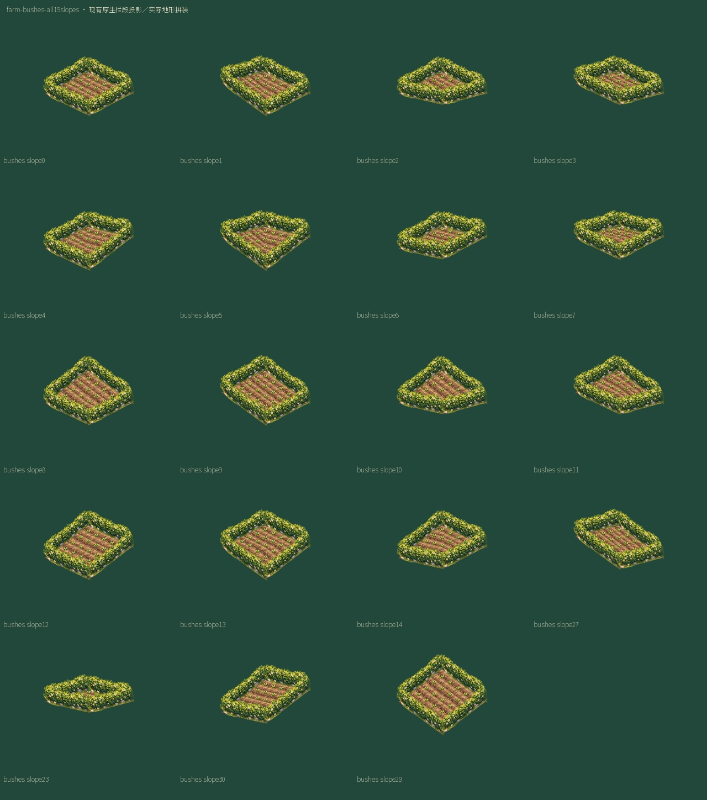
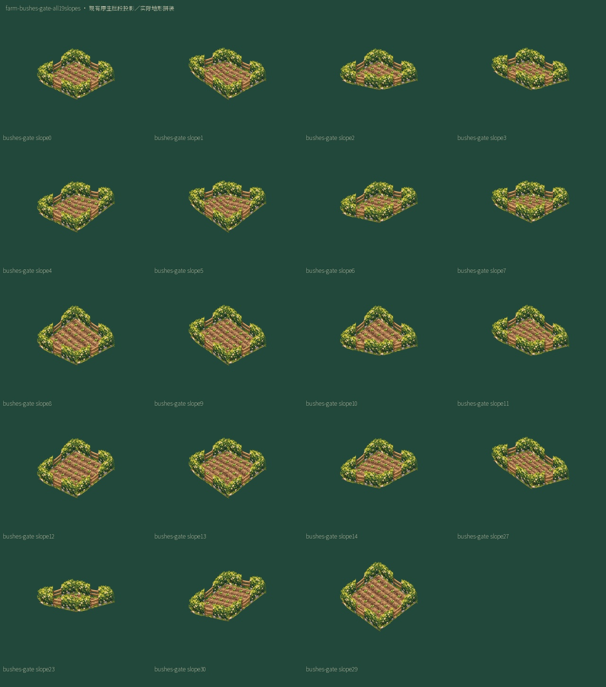
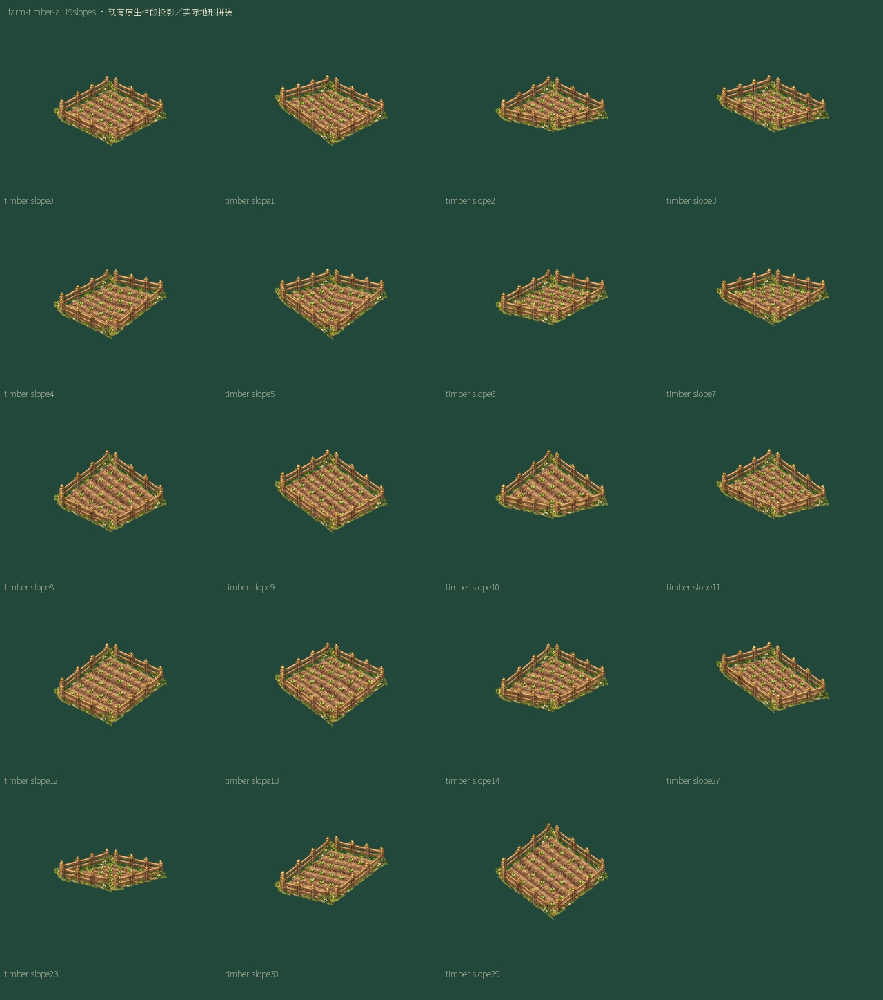
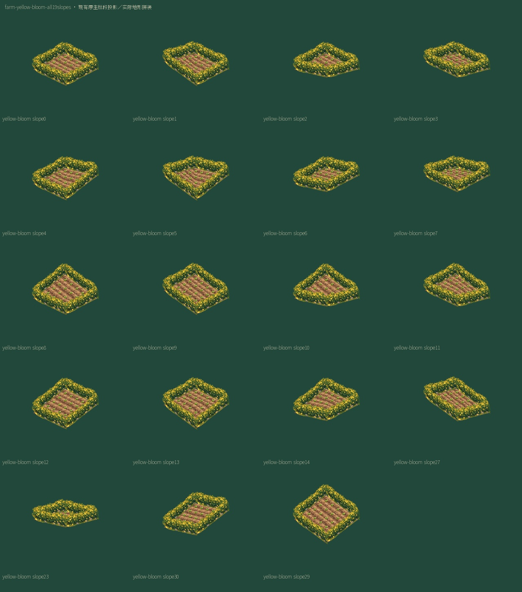
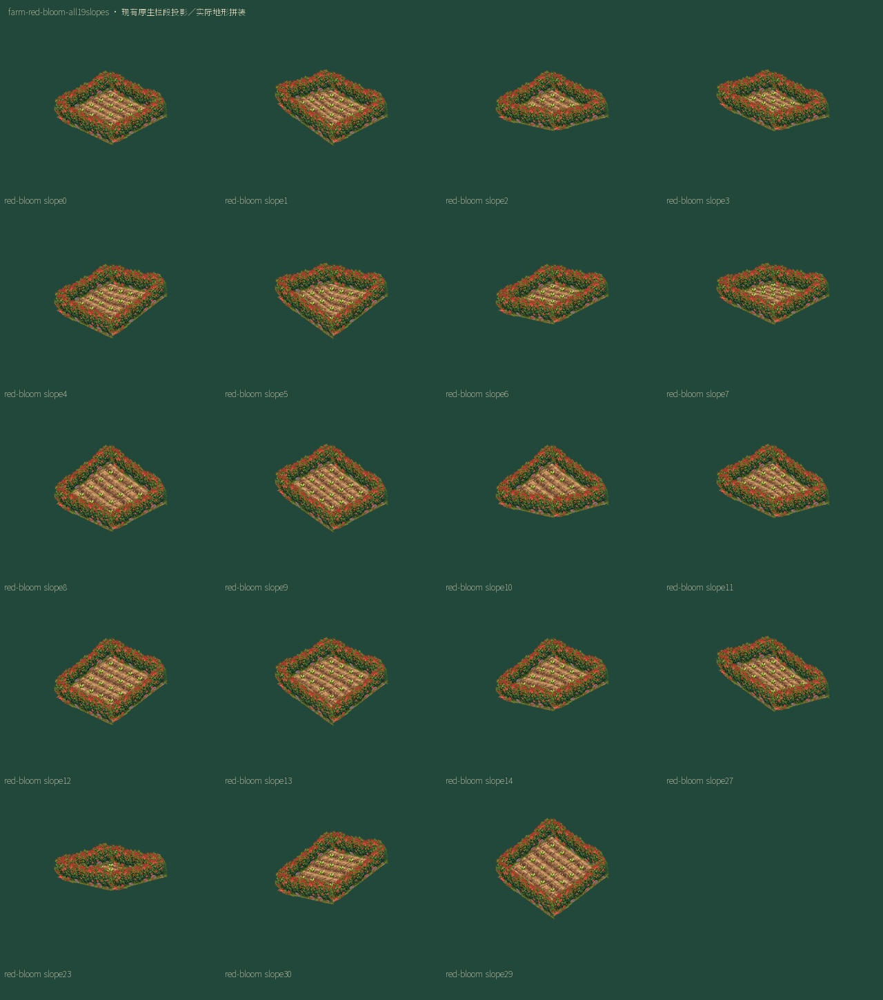
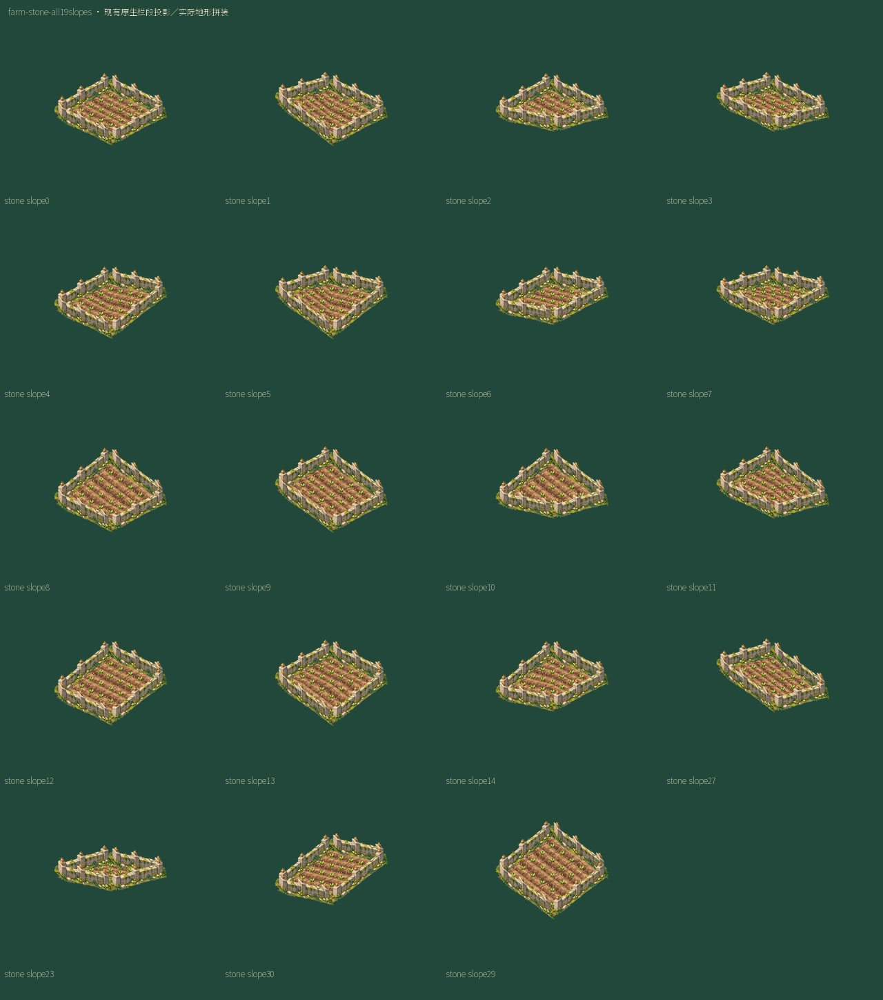
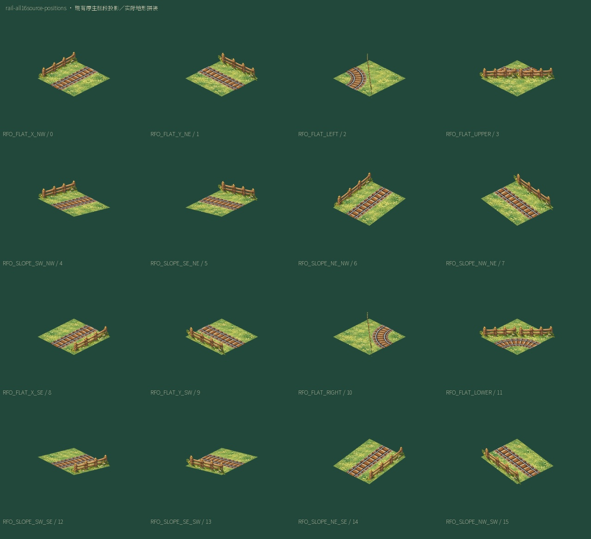
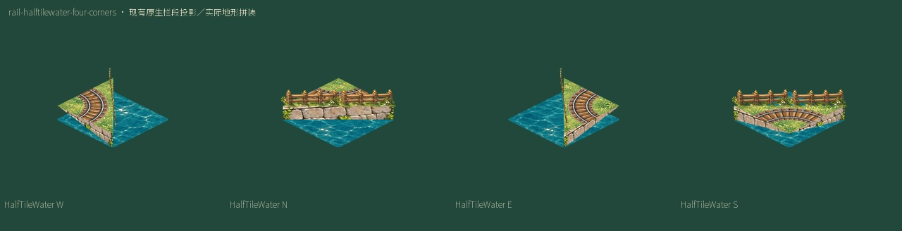

农田与铁路围栏 · 源坡面、角点与分隔线
6有效农田家族×6源offset复用36PNG；456个19坡/四边角点绑定。铁路8源role复用8PNG、16位置及4个HalfTileWater角。全部来自现有原生栏段；没有代码重画栏，也不把隐式0变成新实体。
规格与状态farm-bushes-all19slopes

farm-bushes-gate-all19slopes

farm-timber-all19slopes

farm-yellow-bloom-all19slopes

farm-red-bloom-all19slopes

farm-stone-all19slopes

rail-all16source-positions

rail-halftilewater-four-corners
